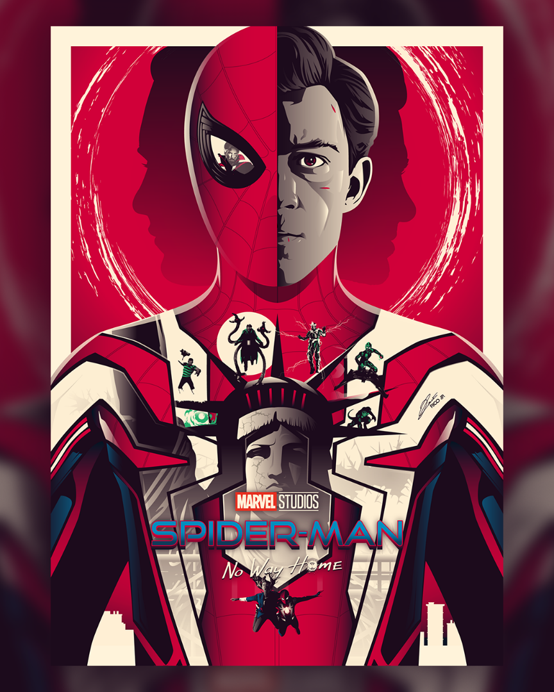
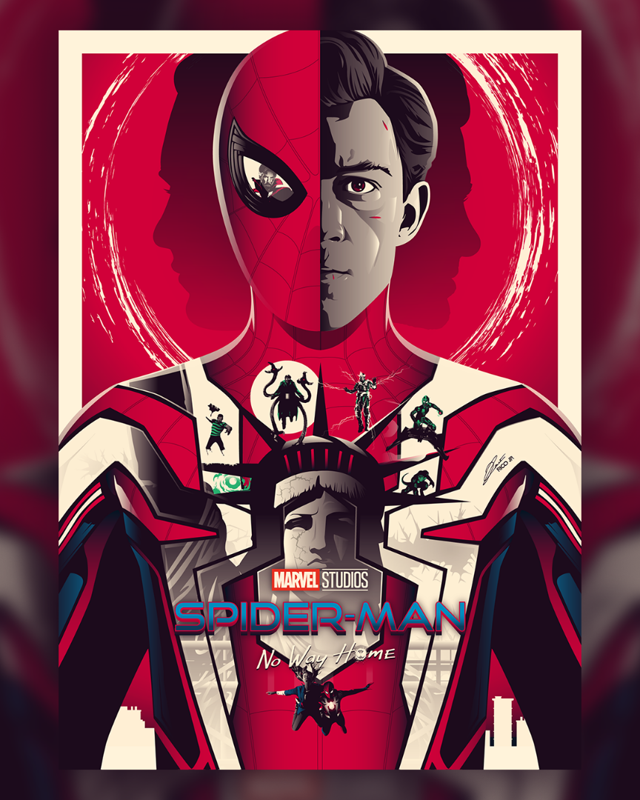

Spider-Man: No Way Home adalah film pahlawan super Amerika Serikat berdasarkan karakter Marvel Comics, Spider-Man, yang diproduksi bersama oleh Marvel Studios, Columbia Pictures dan Pascal Pictures, dan didistribusikan oleh Sony Pictures Releasing. Film ini adalah sekuel Spider-Man: Homecoming (2017) dan Spider-Man: Far From Home (2019), dan merupakan film ke-27 di Marvel Cinematic Universe (MCU).
Setelah Quentin Beck menjebak Peter Parker atas pembunuhannya dan mengungkapkan identitas Parker sebagai Spider-Man,[a] Parker, kekasihnya Michelle "MJ" Jones-Watson, sahabatnya Ned Leeds, dan bibi May diinterogasi oleh Departemen Pengendalian Kerusakan. Pengacara Matt Murdock berhasil membatalkan tuntutan Parker, namun kelompok ini bergulat dengan publisitas negatif.